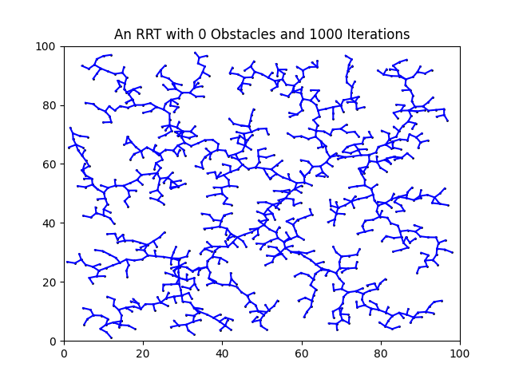
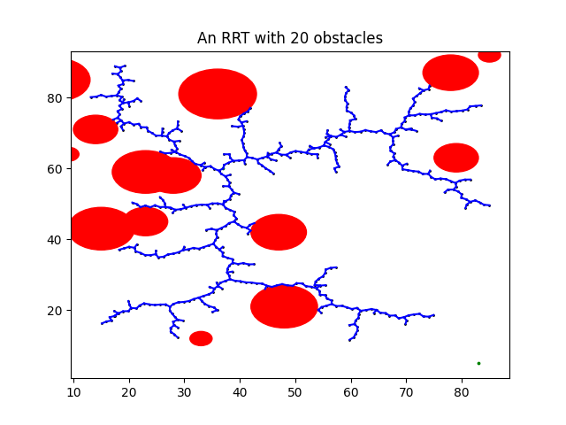

Rapidly-Exploring Random Tree (RRT)
Python | Artificial Intelligence | Randomized Algorithms | Path Planning
Description
A Rapidly-Exploring Random Tree (RRT) is a fundamental path planning algorithm in robotics.
In This project, I implemented an RRT exploration algorithm used to find a goal coordination, while avoiding obstacles in a two-dimensional domain.
Take a look at the project on my GitHub page.

The RRT exploration
Overview
The pseudocode for the implementation:

The implementation pseudocode
Simple RRT
In this part I implemented a simple RRT algorithm in 2D with the domain of [0,100]×[0,100] and incremental distance of 1.
The program coverages uniformly over the whole space.
The following figure shows the algorithm implementation after 500 iterations:

Simple RRT
Planning a Path with Obstacles
In this part I implemented an RRT algorithm with obstacles.
The path planning algorithm checks the path for collisions and avoids the round obstacles.
The following figure shows the algorithm implementation after 500 iterations:

RRT with obstacles